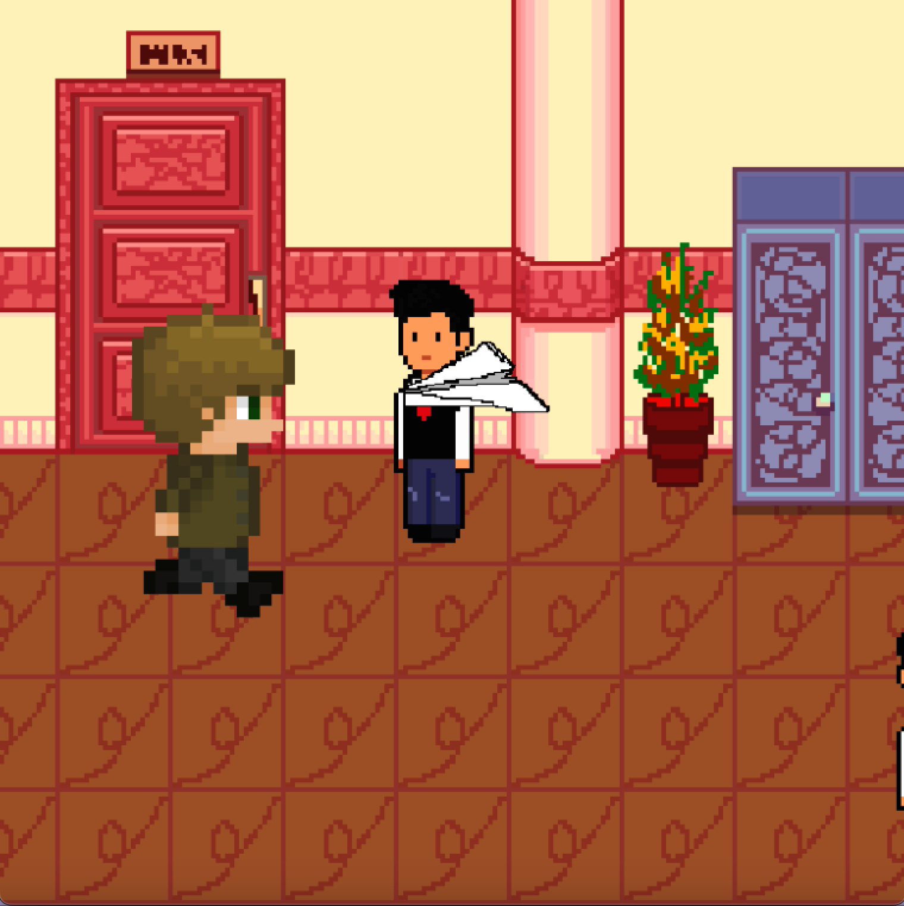

Katz Run is a very simple game. The main character, Mr Katz will run through the hallway, the player must help him dodge the many obstacles in his path by jumping and ducking. To jump, press the up arrow and to duck press the down arrow on your keyboard. Keep running for as long as you can to score more points!
This game is so simple you don't really even need hints! But, if you really need, here's some helpful advice.